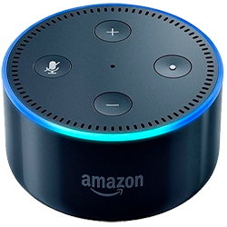
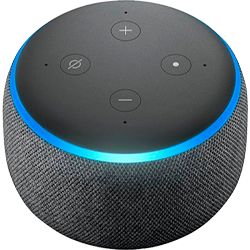
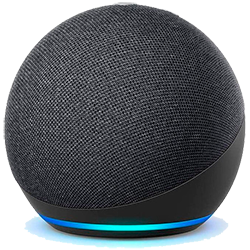

Quem (ou o que) é a Alexa?
Em essência, a Alexa é uma assistente virtual interativa que opera a partir de uma interface de voz e utiliza recursos de inteligência artificial para oferecer a melhor resposta possível aos comandos do usuário.
A plataforma junta funções de organização, produtividade, conhecimento e entretenimento, com respostas em tempo real e servindo até mesmo como um serviço de gerenciamento de outros dispositivos.
A assistente foi apresentada em novembro de 2014 com o primeiro dispositivo da linha Echo de alto-falantes inteligentes. O nome foi escolhido tanto pela pronúncia marcante, especialmente na consoante "x", quanto como uma homenagem à biblioteca de Alexandria, uma das grandes fontes de obras e documentos do Egito Antigo.

O que é um Smart Speaker?
De forma simplificada, um smart Speaker ou caixa de som inteligente é um aparelho que além de reproduzir áudio possui como principal característica a presença de um assistente virtual, normalmente Alexa da Amazon ou Google Assistente, e que funciona como um centralizador de comandos de voz feitos ao assistente.
Outra finalidade bastante relevante do smart speaker é controlar outros aparelhos inteligentes compatíveis, basta um comando de voz direcionado à caixa de som inteligente para controlar lâmpadas inteligentes, TV, ar-condicionado, cafeteira e uma série de outros aparelhos, desde que compatíveis com o assistente virtual.
Vale lembrar que Alexa e Google Assistente estão presentes em inúmeros aparelhos como smartphones e TVs, porém as caixas de som inteligentes são a melhor forma de centralizar os comandos de voz em um ambiente, funcionando como um receptor das ações que você faz para o assistente.
Evolução da Alexa (Echo dot)
Echo dot 1º/2º geração
A primeira aparição da Alexa em caixas de som foi com a echo dot de 1º e 2º geração, que são muitos parecidas em questão de design (a mesma).
Echo dot 3º geração
Com o lançamento da echo dot de 3º geração, bastante coisa foi implementada, inclusive uma entrada de som melhor e design mais moderno.
Echo dot 4º geração
Até o momento, a echo dot de 4º geração vem ganhando mercado de maneira extrema pois a entrada e a saida de som foi amplamente melhorado e modificado.